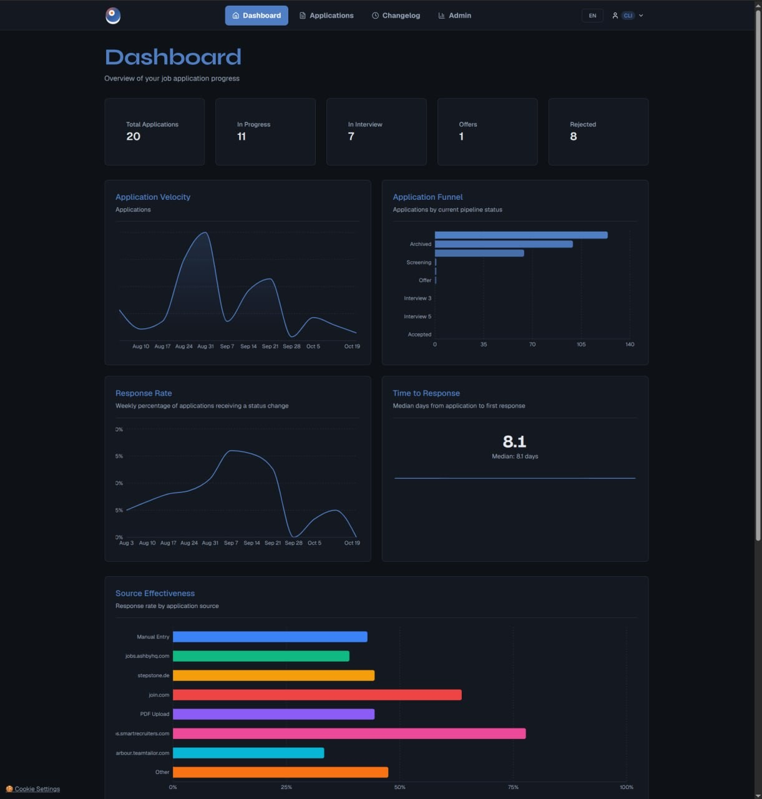

myKaria turns a job ad into a tailored CV and cover letter that a candidate can actually defend in the interview. I designed it, built it and run it: database, backend, frontend, AI pipeline, billing and deployment. Around 200 commits, 68 migrations, 23 document templates, live in production. It began as my own tool during my own job search in Germany.
AI CV tools optimise for interview invitations, so they exaggerate. The candidate gets the interview and loses it, because the document claims things they cannot back up. Recruiters now discount generated CVs by default. So defensibility is not a writing problem, it is a ranking and policy problem: which skills genuinely match, at what level they can honestly be claimed, which ones to feature or omit, and how to cover missing requirements with real adjacent experience rather than invention.

myKaria started as my own tool. I was applying for job after job in Germany, tailoring every CV and letter by hand: reading the company, judging which of my skills genuinely mattered for the role, rewriting the same history twenty times. So I built the pipeline for myself.
Then I used it on my own applications. Company research, honest skill matching, generated documents, section by section edits before sending. What survived that use is what shipped: anything that did not get me a better application out the door did not make it into the product. Once it was working reliably in my own workflow, making it available to other people was the obvious next step.
That origin explains the codebase. The honest skill tiers exist because I would not walk into an interview unable to defend my own CV. Section editing exists because a generated document always needs one more pass.
I can take an ambiguous product idea to a running system: schema design, provider abstraction, prompt engineering with guardrails, billing, deployment, and the unglamorous parts such as retention jobs and idempotency.